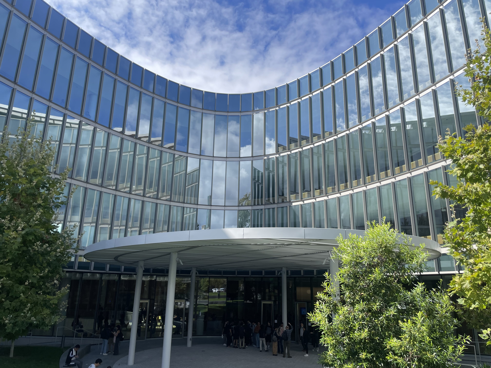
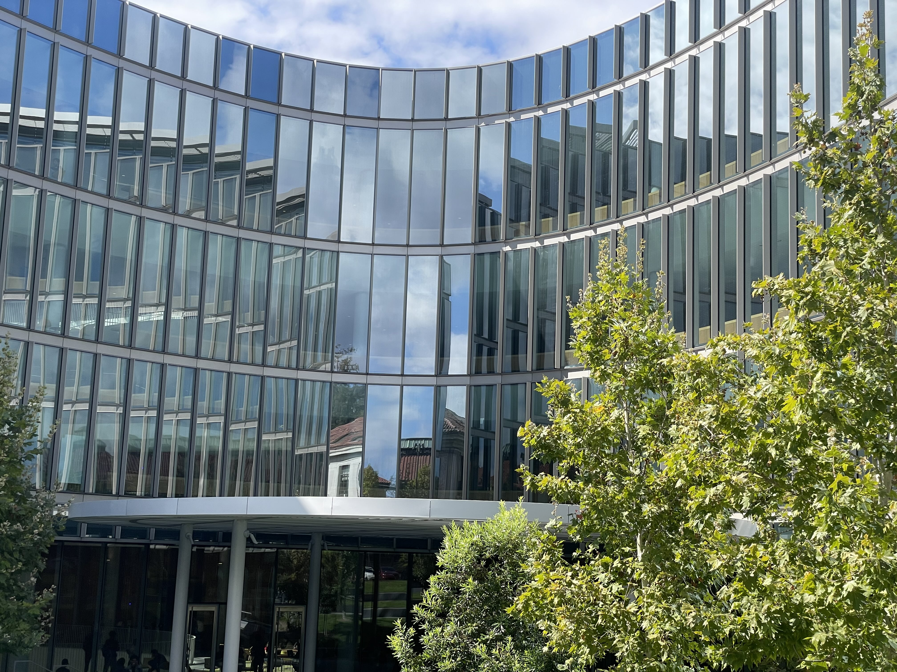

Project 0: Becoming Friends with My Camera
CS 180, Fall 2026
Part 1: Selfie: The Wrong Way vs. The Right Way
Close up.
A foot back but zoomed in.
Part 2: Architectural Perspective

Close up.

Farther away but zoomed in.
Part 3: Dolly Zoom
Dolly zoom. Interesting how the shape of the bottle appears to morph.